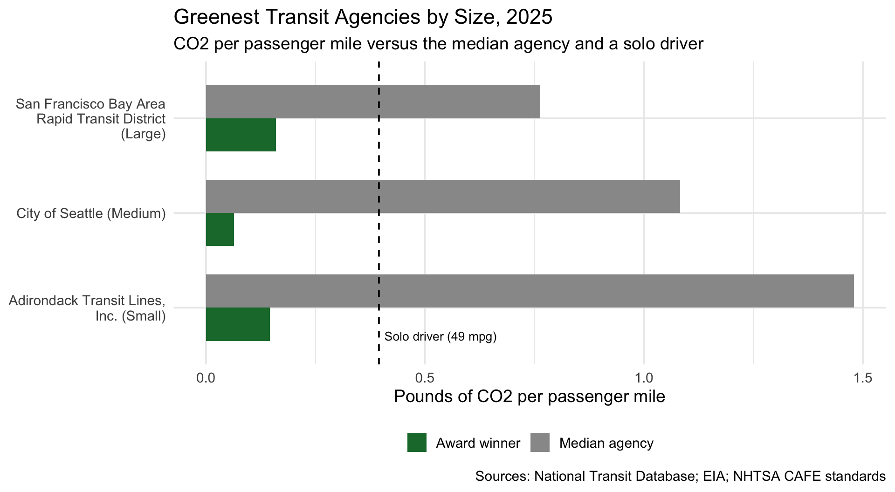
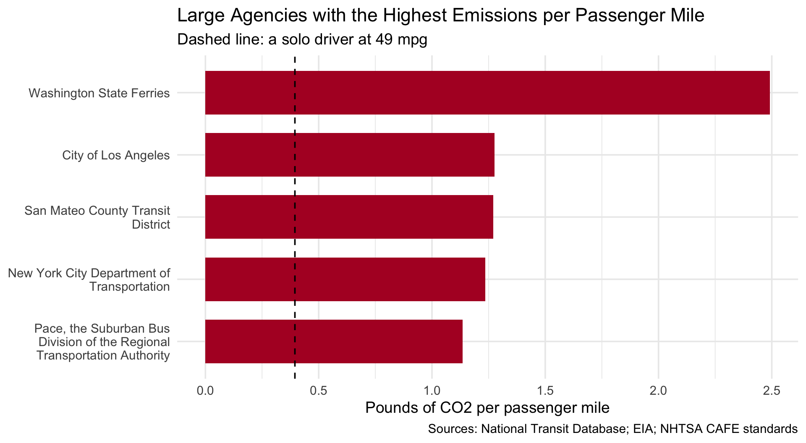

library(tidyverse)STA 9750 Mini-Project #02: Identifying Environmentally Responsible US Public Transit Systems
library(tidyverse)
library(stringr)
library(httr2)
library(rvest)
library(readxl)
library(fs)Data Acquisition
library(tidyverse)
library(stringr)
library(httr2)
library(rvest)
library(readxl)
library(fs)Data Acquisition
get_eia_sep <- function(state, abbr){
state_formatted <- str_to_lower(state) |> str_replace_all("\\s", "")
dir_name <- fs::path("data", "mp02")
file_name <- fs::path(dir_name, state_formatted)
fs::dir_create(dir_name, recurse=TRUE)
if(!fs::file_exists(file_name)){
RESPONSE <- request("https://www.eia.gov") |>
req_url_path("electricity", "state", state_formatted) |>
req_headers(`User-Agent` = "Mozilla/5.0 (Macintosh; Intel Mac OS X 10.15; rv:149.0) Gecko/20100101 Firefox/149.0") |>
req_retry(max_tries = 4) |>
req_perform(file_name)
resp_check_status(RESPONSE)
}
TABLE <- read_html(file_name) |>
html_element("table") |>
html_table() |>
mutate(Item = str_to_lower(Item))
if("U.S. rank" %in% colnames(TABLE)){
TABLE <- TABLE |> rename(Rank = `U.S. rank`)
}
CO2_MWh <- TABLE |>
filter(Item == "carbon dioxide (lbs/mwh)") |>
pull(Value) |> str_replace_all(",", "") |> as.numeric()
PRIMARY <- TABLE |>
filter(Item == "primary energy source") |> pull(Rank)
RATE <- TABLE |>
filter(Item == "average retail price (cents/kwh)") |>
pull(Value) |> as.numeric()
GENERATION_MWh <- TABLE |>
filter(Item == "net generation (megawatthours)") |>
pull(Value) |> str_replace_all(",", "") |> as.numeric()
data.frame(CO2_MWh = CO2_MWh,
primary_source = PRIMARY,
electricity_price_MWh = RATE * 10,
generation_MWh = GENERATION_MWh,
state = state,
abbreviation = abbr)
}
EIA_SEP_REPORT <- map2(state.name, state.abb, get_eia_sep) |> list_rbind()load_ntd_energy <- function(){
NTD_ENERGY_FILE <- fs::path("data", "mp02", "2025_ntd_energy.xlsx")
if(!fs::file_exists(NTD_ENERGY_FILE) || file.info(NTD_ENERGY_FILE)$size < 1e4){
stop("Put the real energy file at data/mp02/2025_ntd_energy.xlsx")
}
to_numeric_fill_0 <- function(x){
x <- if_else(x == "-", NA, x)
replace_na(as.numeric(x), 0)
}
read_excel(NTD_ENERGY_FILE) |>
rename(`NTD ID` = 1) |>
select(-any_of(c("Reporter Type", "Reporting Module",
"Other Fuel Description",
"Bio-Diesel Description"))) |>
mutate(across(-c(`Agency Name`, `Mode`, `TOS`), to_numeric_fill_0)) |>
group_by(`NTD ID`, `Mode`, `Agency Name`) |>
summarize(across(where(is.numeric), sum), .groups = "keep") |>
mutate(ENERGY = sum(c_across(c(where(is.numeric))))) |>
filter(ENERGY > 0) |>
select(-ENERGY) |>
ungroup()
}
NTD_ENERGY <- load_ntd_energy()New names:
• `` -> `...1`load_ntd_service <- function(){
DATA_DIR <- fs::path("data", "mp02")
fs::dir_create(DATA_DIR, recurse=TRUE)
NTD_SERVICE_FILE <- fs::path(DATA_DIR, "2025_ntd_service.csv")
if(!fs::file_exists(NTD_SERVICE_FILE)){
request("https://data.transportation.gov/resource/4fir-qbim.csv") |>
req_url_query(`$query`=paste(
"SELECT `_5_digit_ntd_id` AS `NTD_ID`",
"`max_agency` AS `AGENCY`",
"`max_reporter_type` AS `reporter_type`",
"`max_organization_type` AS `organization_type`",
"`max_city` AS `city`",
"`max_state` AS `state`",
"`mode`",
"`type_of_service`",
"`max_primary_uza_code` as `uza_code`",
"`max_primary_uza_name` as `uza_name`",
"`max_primary_uza_area_sq_miles` as `uza_sq_miles`",
"`max_primary_uza_population` as `uza_population`",
"`max_service_area_sq_miles` as `service_area_sq_miles`",
"`max_service_area_population` as `service_area_population`",
"`questionable_record` as `flagged_likely_inaccurate`",
"`sum_unlinked_passenger_trips_upt` as `total_upt`",
"`sum_passenger_miles` WHERE caseless_one_of(`report_year`, '2025') limit 50000",
sep=",")) |>
req_headers(`User-Agent` = "Mozilla/5.0 (Macintosh; Intel Mac OS X 10.15; rv:149.0) Gecko/20100101 Firefox/149.0") |>
req_perform(NTD_SERVICE_FILE)
}
if(file.info(NTD_SERVICE_FILE)$size < 1e4){
stop("Download failed. Run unlink('data/mp02/2025_ntd_service.csv') and try again.")
}
read_csv(NTD_SERVICE_FILE) |>
mutate(flagged_likely_inaccurate = !is.na(flagged_likely_inaccurate))
}
NTD_SERVICE <- load_ntd_service()Rows: 3762 Columns: 17
── Column specification ────────────────────────────────────────────────────────
Delimiter: ","
chr (11): NTD_ID, AGENCY, reporter_type, organization_type, city, state, mod...
dbl (6): uza_sq_miles, uza_population, service_area_sq_miles, service_area_...
ℹ Use `spec()` to retrieve the full column specification for this data.
ℹ Specify the column types or set `show_col_types = FALSE` to quiet this message.Data Cleaning
recode_mode <- function(x){
recode_values(x,
"MB" ~ "Bus",
"CB" ~ "Commuter Bus",
"RB" ~ "Bus Rapid Transit",
"TB" ~ "Trolleybus",
"HR" ~ "Heavy Rail",
"LR" ~ "Light Rail",
"SR" ~ "Streetcar Rail",
"CR" ~ "Commuter Rail",
"YR" ~ "Hybrid Rail",
"MG" ~ "Monorail/Automated Guideway",
"AR" ~ "Alaska Railroad",
"FB" ~ "Ferryboat",
"DR" ~ "Demand Response",
"DT" ~ "Demand Response - Taxi",
"VP" ~ "Vanpool",
"PB" ~ "Publico",
"IP" ~ "Inclined Plane",
"CC" ~ "Cable Car",
"TR" ~ "Aerial Tramway",
default = "Unknown"
)
}
NTD_ENERGY <- NTD_ENERGY |>
mutate(Mode = if_else(nchar(Mode) == 2, recode_mode(Mode), Mode))
NTD_SERVICE <- NTD_SERVICE |>
mutate(mode = if_else(nchar(mode) == 2, recode_mode(mode), mode))Emissions
KG_TO_LB <- 2.20462
# 1. One row per agency + mode from the service data
SERVICE_BY_MODE <- NTD_SERVICE |>
mutate(NTD_ID = as.numeric(NTD_ID)) |>
group_by(NTD_ID, mode) |>
summarize(state = first(state),
total_upt = sum(total_upt, na.rm = TRUE),
passenger_miles = sum(sum_passenger_miles, na.rm = TRUE),
.groups = "drop")
# 2. Join energy -> service -> state electricity profile
US_CO2_MWh <- weighted.mean(EIA_SEP_REPORT$CO2_MWh,
EIA_SEP_REPORT$generation_MWh)
EMISSIONS <- NTD_ENERGY |>
left_join(SERVICE_BY_MODE,
join_by(`NTD ID` == NTD_ID, Mode == mode),
relationship = "one-to-one") |>
left_join(EIA_SEP_REPORT |> select(abbreviation, CO2_MWh),
join_by(state == abbreviation)) |>
mutate(
# DC, territories: fall back on the national average grid
grid_lbs_per_kWh = coalesce(CO2_MWh, US_CO2_MWh) / 1000,
# kg CO2 per gallon, EIA coefficients
fuel_lbs = KG_TO_LB * (
`Gallons of Diesel Fuel` * 10.19 +
`Gallons of Bio-Diesel` * 10.19 +
`Gallons of Other Fuel` * 10.19 +
`Gallons of Gasoline` * 8.78 +
`Gallons of Kerosene` * 9.88 +
`Gallons of Bunker Fuel` * 11.24 +
`Gallons of Liquified Petroleum Gas`* 5.75 +
`Gallons of Compressed Natural Gas` * 6.05 +
`Gallons of Liquified Nat Gas` * 4.48),
electric_lbs = (`Kilowatt hours of Electric Battery` +
`Kilowatt hours of Electric Propulsion`) * grid_lbs_per_kWh,
total_emissions_lbs = fuel_lbs + electric_lbs)Normalizing Emissions
AGENCY_EMISSIONS <- EMISSIONS |>
group_by(`NTD ID`, `Agency Name`) |>
summarize(state = first(state),
total_emissions_lbs = sum(total_emissions_lbs),
electric_lbs = sum(electric_lbs),
total_upt = sum(total_upt),
passenger_miles = sum(passenger_miles),
.groups = "drop") |>
# drop agencies too small for a meaningful comparison
filter(total_upt >= 50000, passenger_miles >= 100000) |>
mutate(lbs_per_upt = total_emissions_lbs / total_upt,
lbs_per_mile = total_emissions_lbs / passenger_miles,
electric_share = electric_lbs / total_emissions_lbs,
size = case_when(total_upt >= 10e6 ~ "Large",
total_upt >= 1e6 ~ "Medium",
TRUE ~ "Small"),
size = factor(size, levels = c("Small", "Medium", "Large")))Awards
ELIGIBLE <- AGENCY_EMISSIONS |> filter(total_emissions_lbs > 0)
# Award 1: Greenest per passenger mile, by size
GREENEST <- ELIGIBLE |>
group_by(size) |>
slice_min(lbs_per_mile, n = 1) |>
ungroup()
# Reference: median agency in each size group
MEDIANS <- ELIGIBLE |>
group_by(size) |>
summarize(median_lbs_per_mile = median(lbs_per_mile),
.groups = "drop")
GREENEST |>
left_join(MEDIANS, join_by(size)) |>
mutate(times_cleaner = median_lbs_per_mile / lbs_per_mile) |>
select(Size = size, Agency = `Agency Name`,
`Lbs CO2 per passenger mile` = lbs_per_mile,
`Median agency` = median_lbs_per_mile,
`Times cleaner than median` = times_cleaner) |>
knitr::kable(digits = 2)| Size | Agency | Lbs CO2 per passenger mile | Median agency | Times cleaner than median |
|---|---|---|---|---|
| Small | Adirondack Transit Lines, Inc. | 0.15 | 1.48 | 10.13 |
| Medium | City of Seattle | 0.06 | 1.08 | 16.95 |
| Large | San Francisco Bay Area Rapid Transit District | 0.16 | 0.76 | 4.76 |
# Award 2 (own, Worst Of): dirtiest large agency
ELIGIBLE |>
filter(size == "Large") |>
slice_max(lbs_per_mile, n = 3) |>
select(Agency = `Agency Name`, `Lbs CO2 per passenger mile` = lbs_per_mile) |>
knitr::kable(digits = 2)| Agency | Lbs CO2 per passenger mile |
|---|---|
| Washington State Ferries | 2.49 |
| City of Los Angeles | 1.28 |
| San Mateo County Transit District | 1.27 |
Award Graphics
MPG <- 49 # NHTSA MY2026 CAFE fleet-wide target
CAR_LBS_PER_MILE <- (8.78 * KG_TO_LB) / MPG # gasoline: 8.78 kg CO2/gal
# Plot 1: Greenest agency in each size class vs. the median agency
PLOT1 <- GREENEST |>
left_join(MEDIANS, join_by(size)) |>
transmute(label = paste0(`Agency Name`, " (", size, ")"),
`Award winner` = lbs_per_mile,
`Median agency` = median_lbs_per_mile) |>
pivot_longer(-label, names_to = "who", values_to = "lbs_per_mile")
ggplot(PLOT1, aes(x = label, y = lbs_per_mile, fill = who)) +
geom_col(position = "dodge", width = 0.7) +
geom_hline(yintercept = CAR_LBS_PER_MILE, linetype = "dashed") +
annotate("text", x = 0.6, y = CAR_LBS_PER_MILE, hjust = -0.05, vjust = -0.6,
label = "Solo driver (49 mpg)", size = 3.5) +
scale_x_discrete(labels = scales::label_wrap(28)) +
scale_fill_manual(values = c("Award winner" = "#1b7837",
"Median agency" = "grey60")) +
coord_flip() +
labs(title = "Greenest Transit Agencies by Size, 2025",
subtitle = "CO2 per passenger mile versus the median agency and a solo driver",
x = NULL, y = "Pounds of CO2 per passenger mile", fill = NULL,
caption = "Sources: National Transit Database; EIA; NHTSA CAFE standards") +
theme_minimal(base_size = 14) +
theme(legend.position = "bottom")
# Plot 2 (own award, "Worst Of"): dirtiest large agencies
WORST <- ELIGIBLE |>
filter(size == "Large") |>
slice_max(lbs_per_mile, n = 5)
ggplot(WORST, aes(x = reorder(`Agency Name`, lbs_per_mile), y = lbs_per_mile)) +
geom_col(fill = "#b2182b", width = 0.7) +
geom_hline(yintercept = CAR_LBS_PER_MILE, linetype = "dashed") +
scale_x_discrete(labels = scales::label_wrap(30)) +
coord_flip() +
labs(title = "Large Agencies with the Highest Emissions per Passenger Mile",
subtitle = "Dashed line: a solo driver at 49 mpg",
x = NULL, y = "Pounds of CO2 per passenger mile",
caption = "Sources: National Transit Database; EIA; NHTSA CAFE standards") +
theme_minimal(base_size = 14)
Green Transit Alliance Announces 2025 Awards: Seattle, BART and Adirondack Trailways Lead the Nation
Many US transit agencies emit more CO2 per passenger than a driver in a modern car, but the best ones are many times cleaner.
The Green Transit Alliance today announced the winners of its annual awards for environmentally responsible public transit. Using 2025 data from the National Transit Database, we compared each agency’s total emissions, from fuel burned and from the electricity generation behind electric service, with the miles its riders actually traveled.
How we measure. Our headline metric is pounds of CO2 per passenger mile. Fuel use comes from agency reports, converted with US Energy Information Administration emission factors. Electric service uses each state’s average grid emissions. Agencies are grouped as small, medium or large by annual trips.
Greenest Transit Agency
Large: San Francisco Bay Area Rapid Transit District (BART) emits about 0.16 lbs of CO2 per passenger mile, roughly a fifth of the typical large agency. Medium: City of Seattle emits about 0.06 lbs per passenger mile, with electric trolleybuses and rail powered by Washington’s hydroelectric-heavy grid. That is about sixteen times cleaner than the median medium-sized agency. Small: Adirondack Trailways emits about 0.15 lbs per passenger mile. Its long-distance coaches carry full loads over many miles.
For comparison, a solo driver in a car meeting the federal 49 mpg standard emits about 0.40 lbs per mile.
Dubious Distinction: Washington State Ferries tops our “Worst Of” list among large agencies, at about 2.5 lbs per passenger mile. Moving vehicles and passengers across open water takes far more fuel than a bus or train on land.
What it means. The median agency in every size class emits more per passenger mile than a solo driver at that fuel economy. Transit’s climate payoff depends on filling seats and running on clean power, and the winners do both.
Methods note: biodiesel and other renewable diesels are counted at the diesel tailpipe rate. The 49 mpg figure is a federal target, and real-world economy is lower.
Methods: I combined three public data sets: the 2025 National Transit Database (NTD) energy consumption report, the NTD service report, and state electricity profiles from the US Energy Information Administration (EIA). Service data was first summed to one row per agency and transit mode, then joined to the energy data by NTD ID and mode, and finally to the EIA profiles by state. For fuel-burning vehicles, gallons of each fuel were converted to pounds of CO2 using EIA emission coefficients (for example, 10.19 kg of CO2 per gallon of diesel and 8.78 kg per gallon of gasoline). Biodiesel and the “other fuel” category, which is mostly renewable diesel, were counted at the diesel rate, so agencies are not credited for biofuels. Ethanol and hydrogen were counted as zero at the point of use. Compressed and liquefied natural gas rely on approximate gallon-equivalent factors. For electric service, kilowatt hours were multiplied by the average CO2 per MWh of the agency’s state, and the national generation-weighted average was used for DC and territories. Emissions were summed across modes for each agency, then divided by annual passenger miles and by unlinked passenger trips. We excluded agencies with fewer than 50,000 trips or 100,000 passenger miles, and grouped the rest by annual trips into small (under 1 million), medium (1 to 10 million) and large (10 million or more). As a benchmark, we assumed a solo driver in a car meeting the federal 49 mpg fleet target, which is about 0.40 pounds of CO2 per mile. Because 49 mpg is a regulatory target and real-world fuel economy is lower, this benchmark is favorable to driving. All figures are tailpipe or grid-average estimates and do not capture vehicle manufacturing or agency-specific green power purchases.
AI Usage Statement
I didnt use any AI to code or write the statments, I did input some screenshots when I rendered it and there were errors I had to fix.